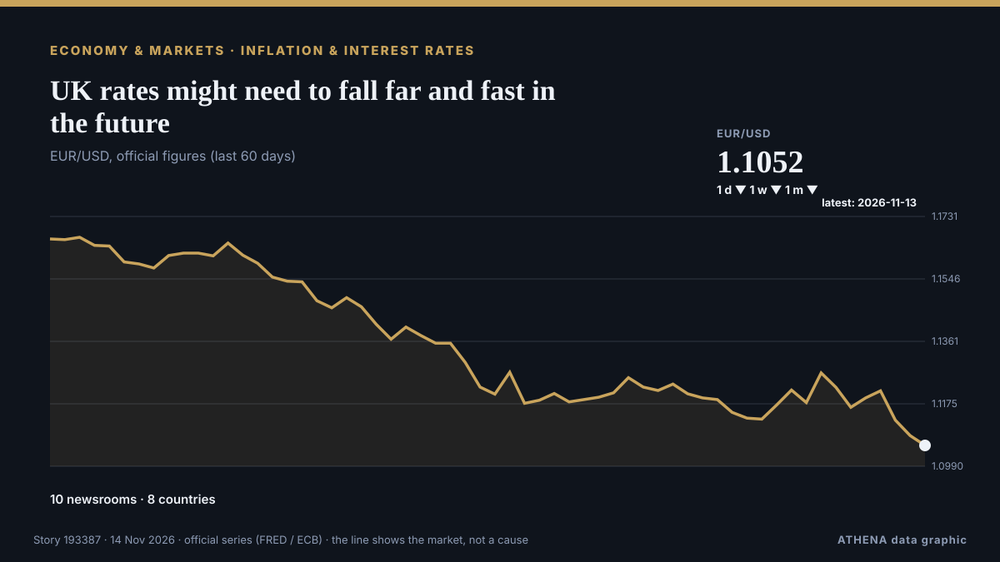

Οικονομία, Χρηματοοικονομικά & Αγορές
ΧορηγούμενοΠαρουσιάζεται από  Cybernetics and Artificial Intelligence Lab Welcome to the Cybernetics and Artificial Intelligence Laboratory, established at the Department of Business Administration of the National and Kapodistrian University of Athens. The lab is headed by Professor Dimitrios Thomakos. The lab aims to do research that can be published in top venues. Our research uses tools and methods of Artificial Intelligence, and lies in the following areas: - Forecasting - Decision making - Cyber security - Finance We are always looking forward to collaborating with exceptional students!
Cybernetics and Artificial Intelligence Lab Welcome to the Cybernetics and Artificial Intelligence Laboratory, established at the Department of Business Administration of the National and Kapodistrian University of Athens. The lab is headed by Professor Dimitrios Thomakos. The lab aims to do research that can be published in top venues. Our research uses tools and methods of Artificial Intelligence, and lies in the following areas: - Forecasting - Decision making - Cyber security - Finance We are always looking forward to collaborating with exceptional students!
Οι τίτλοι των ειδήσεων παρουσιάζονται στα αγγλικά, όπως δημοσιεύτηκαν.
Παρακολούθηση αγορών - επίσημα στοιχεία
Προς τα πού κινούνται τα επίσημα μεγέθη των αγορών - άνοδος, πτώση ή σταθερότητα - με την τελευταία επίσημη τιμή και την ημερομηνία της, και οι ειδήσεις αγορών που επιβεβαίωσε το ATHENA. Επίσημα στοιχεία, όχι τιμές σε πραγματικό χρόνο.
Ενέργεια
| 1 ημέρα | 1 εβδομάδα | 1 μήνας | Επίσημη τιμή | |
|---|---|---|---|---|
| Πετρέλαιο Brent | ▲ | ▲ | ▼ | $92,14/bblΕπίσημα στοιχεία της 11 Νοε 2026 |
| Πετρέλαιο WTI | ▬ | ▼ | ▼ | $89,62/bblΕπίσημα στοιχεία της 11 Νοε 2026 |
| Φυσικό αέριο ΗΠΑ (Henry Hub) | ▬ | ▲ | ▼ | $3,00/MMBtuΕπίσημα στοιχεία της 11 Νοε 2026 |
| Ευρωπαϊκό φυσικό αέριο (1 μήνας · 3 μήνες · 12 μήνες)(1Μ · 3Μ · 12Μ) | ▲ | ▲ | ▲ | $25,49/MMBtuΕπίσημα στοιχεία της 1 Σεπ 2026 |
| Άνθρακας (Αυστραλία) (1 μήνας · 3 μήνες · 12 μήνες)(1Μ · 3Μ · 12Μ) | ▲ | ▲ | ▲ | $153,84/tΕπίσημα στοιχεία της 1 Σεπ 2026 |
Τρόφιμα
| 1 μήνας | 3 μήνες | 12 μήνες | Επίσημη τιμή | |
|---|---|---|---|---|
| Σιτάρι | ▲ | ▲ | ▲ | $246,85/tΕπίσημα στοιχεία της 1 Σεπ 2026 |
Χρηματιστήρια ΗΠΑ
| 1 ημέρα | 1 εβδομάδα | 1 μήνας | Επίσημη τιμή | |
|---|---|---|---|---|
| S&P 500 | ▼ | ▲ | ▼ | Μόνο κατεύθυνση (δείκτης © Cboe)Επίσημα στοιχεία της 13 Νοε 2026 |
| Nasdaq Composite | ▼ | ▲ | ▼ | Μόνο κατεύθυνση (δείκτης © Cboe)Επίσημα στοιχεία της 12 Νοε 2026 |
Επιτόκια, κίνδυνος και δολάριο
| 1 ημέρα | 1 εβδομάδα | 1 μήνας | Επίσημη τιμή | |
|---|---|---|---|---|
| Απόδοση 10ετούς ομολόγου ΗΠΑ | ▲ | ▲ | ▼ | 5,10 %Επίσημα στοιχεία της 12 Νοε 2026 |
| Μεταβλητότητα αγοράς (VIX) | ▲ | ▼ | ▲ | Μόνο κατεύθυνση (δείκτης © Cboe)Επίσημα στοιχεία της 12 Νοε 2026 |
| Δολάριο ΗΠΑ, ευρύς δείκτης | ▲ | ▲ | ▲ | 121,88Επίσημα στοιχεία της 6 Νοε 2026 |
Το ευρώ έναντι άλλων νομισμάτων
| 1 ημέρα | 1 εβδομάδα | 1 μήνας | Επίσημη τιμή | |
|---|---|---|---|---|
| EUR/USD | ▼ | ▼ | ▼ | 1,1052 USDΕπίσημα στοιχεία της 13 Νοε 2026 |
| EUR/GBP | ▬ | ▲ | ▼ | 0,8356 GBPΕπίσημα στοιχεία της 13 Νοε 2026 |
| EUR/CHF | ▲ | ▲ | ▼ | 0,9266 CHFΕπίσημα στοιχεία της 13 Νοε 2026 |
| EUR/JPY | ▬ | ▬ | ▼ | 176,83 JPYΕπίσημα στοιχεία της 13 Νοε 2026 |
| EUR/CNY | ▼ | ▼ | ▼ | 7,3738 CNYΕπίσημα στοιχεία της 13 Νοε 2026 |
| EUR/TRY | ▬ | ▼ | ▲ | 55,667 TRYΕπίσημα στοιχεία της 13 Νοε 2026 |
| EUR/NOK | ▬ | ▲ | ▼ | 10,5695 NOKΕπίσημα στοιχεία της 13 Νοε 2026 |
Πηγές: Υπηρεσία Ενεργειακών Πληροφοριών ΗΠΑ (πετρέλαιο, φυσικό αέριο ΗΠΑ), ΔΝΤ (ευρωπαϊκό φυσικό αέριο, άνθρακας, σιτάρι), Υπουργείο Οικονομικών και Federal Reserve των ΗΠΑ (απόδοση 10ετούς, δείκτης δολαρίου) και Cboe (VIX), S&P Dow Jones Indices (S&P 500), Nasdaq (Nasdaq Composite), μέσω FRED (Federal Reserve Bank of St. Louis)· ισοτιμίες αναφοράς του ευρώ © Ευρωπαϊκή Κεντρική Τράπεζα. Οι τιμές είναι οι τελευταίες επίσημες, με την ημερομηνία τους - όχι τιμές σε πραγματικό χρόνο. Τις κατευθύνσεις τις υπολογίζει το ATHENA.
Κρυπτονομίσματα, ETF και μετοχές στις ειδήσεις
- S&P500, Nasdaq end lower as Nvidia uncertainty weighs on tech shares Κίνδυνος 1.2 13 Νοε
- Stocks sway as Wall Street heads for winning week after several turbulent days Κίνδυνος 5.0 13 Νοε
- Bitcoin value drops below $70,000 first time since August 20 Κίνδυνος 1.1 13 Νοε
- Bitcoin holds below $70K as stocks slip despite a cooler US PPI print Κίνδυνος 0.0 13 Νοε
- Bitcoin slides below $70 000 as inflation concerns hurt crypto Κίνδυνος 2.5 13 Νοε
- Nscale updates IPO prospectus that shows widening loss Κίνδυνος 0.9 13 Νοε
- New Anthropic job listing offers $405,000 to land natural gas for its post-IPO data center buildout Κίνδυνος 0.0 13 Νοε
- India's Paytm gets preliminary RBI nod for wallet licence; shares hit record high Κίνδυνος 0.0 13 Νοε
- Anthropic targets valuation of up to $1.4 trillion for blockbuster IPO Κίνδυνος 2.2 13 Νοε
- National Stock Exchange of India deploys direct-to-chip liquid cooling at data center Κίνδυνος 0.0 13 Νοε

Πληθωρισμός & επιτόκιαUK rates might need to fall far and fast in the future
Two tectonic shifts in the mortgage market are changing the way monetary policy works. από Financial Times - Global economy
| 1 Νοε | 72 |
|---|---|
| 2 Νοε | 136 |
| 3 Νοε | 124 |
| 4 Νοε | 114 |
| 5 Νοε | 118 |
| 6 Νοε | 95 |
| 7 Νοε | 42 |
| 8 Νοε | 65 |
| 9 Νοε | 155 |
| 10 Νοε | 130 |
| 11 Νοε | 130 |
| 12 Νοε | 104 |
| 13 Νοε | 48 |
| 14 Νοε | 2 |
Paraguay widens ueno bank probe with fresh charge against ex-president Peña
ASUNCION, Nov 13 - Paraguay prosecutors on Friday added criminal association to the charges facing impeached President Santiago Peña, expanding a probe into the political links surrounding the… από The Straits Times
US aircraft evacuated from second UK base due to Iran threat, WSJ reports
US military aircraft were evacuated from a second UK base due to threats from Iran. από Arab News
Greek tax return declarations 2025: Incomes rose by €9.85billionn, two thirds of self-employed workers earning under €10,000
Tax authority figures reveal rising incomes and higher tax bills, with average declared household income reaching €16,808. από ProtoThema English
Stocks sway as Wall Street heads for winning week after several turbulent days
U.S. stocks are climbing Monday after oil prices eased back. από The Korea Times
US Treasury Secretary Bessent says 'F the Iranian leaders,' confirms move to military base
"I'm not going to be cowered by the death threats they have made against me. από The Jerusalem Post
Bitcoin slides below $70 000 as inflation concerns hurt crypto
Fell as much as 4.4% to $68 297, its lowest level since August 19. από Moneyweb
Treasury Secretary Scott Bessent moves into military housing due to Iranian threats
Treasury Secretary Scott Bessent has moved out of his home in Washington, D.C., and onto a military base out of concern for his safety, including Iranian threats to his life, officials said. από CBS News (World)
Mortgage applications rise 6.2% as rates fall to 7.21%
Refinances rose 5% during the week but stayed 57% below year-ago levels. από HousingWire
Brazil October Inflation Slows to 0.14%
Brazil's IPCA inflation slowed to 0.14% in October, below forecasts, as power and air fares fell. από The Rio Times
Saqib takes seven on debut but Pakistan and Sri Lanka draw first Test
Saqib Khan enjoyed a dream debut with seven wickets, but it was not enough to force a result as the first Test between Pakistan and Sri Lanka petered out into a dull draw in Rawalpindi on Friday. από Business Recorder
Japan services activity expands for fifth month: PMI
New orders increased for a 28th straight month. από The Business Times
Japan: Trade and inflation data back December BoJ hike – DBS
DBS Group Research forecasts Japan’s real GDP to grow 0.8% in Q3, supported by AI-driven exports and stronger wage-led consumption. από FXStreet
Wheelock Place renamed Landmark Orchard after Hongkong Land acquisition
The Orchard Road property has been known as Wheelock Place since 1996. από CNA (Channel NewsAsia)
Britain eyes welfare cuts to tackle surge in youth unemployment
The Labour government will receive proposals next week to restrict youth sickness and disability benefits to fund back-to-work programmes for nearly one million young people. από Free Malaysia Today
Disgruntled tenant shoots building manager dead, wounds four in Washington
The gunman, identified as an emergency medicine physician, barricaded himself in his unit after the shooting. από The Straits Times
Passenger van plunges into river in northern Pakistan, killing 11 people
Officials say a passenger van veered off a mountainous road and plunged into a river in northern Pakistan, killing 11 people and injuring three others. από ABC News (International)
US existing home sales fall to lowest level since 2010
NEW YORK: Sales of previously owned US homes dropped to a more than 16-year low in October due to the drag from higher lending rates, a US realtors association said Thursday. από New Straits Times
United Kingdom inflation: Deutsche Bank sees further upside
Deutsche Bank economists Sanjay Raja and Maui Brennan expect UK inflation to move higher in October, driven by energy, tobacco and modest food and services gains. από FXStreet
Gold and silver prices rise on commodity markets
Gold and silver prices have risen on the COMEX commodity exchange in New York. από AzerNews
Xeneta Forecasts 30% Drop in Global Container Freight Rates by 2027
Xeneta predicts a 30% decline in global container spot rates by 2027, driven by increased ship deliveries and capacity surplus amid Middle East risks. από SeaNews Türkiye
Brazil Interest Rate Cuts Stall on US Yields
Brazil's central bank has cut five times this year, but higher US rates and 4.58% inflation shrink its room. από The Rio Times
US starts 2027 fiscal year with record October budget deficit of US$404bil
October receipts fell by US$35 billion, or 9%, to US$369 billion, due partly to lower net customs duty collections. από Free Malaysia Today
Israeli army, illegal settlers carry out over 1,180 arson attacks in occupied West Bank
The attacks began when Palestinians set fire to an Israeli vehicle near Kibbutz Mitzpe Shalem. από The Jerusalem Post
Finance Minister Details 8 Pillars That Will Underpin Ghana’s New Economy
By: Franklin ASARE-DONKOH Minister of Finance, Dr. από GBC Ghana Online
Klaipėda seeks tenants to co-fund €1 billion southern port expansion
Klaipėda, Lithuania (Ports Europe) November 13, 2026 – The Klaipėda State Seaport Authority has launched a tender to select tenants for 100 hectares of new land in the south of the port, a project… από Ports Europe
USS George H.W. Bush families told to prepare for year-long deployment
Families of sailors on the USS George H.W. από Military Times
Anthropic founders’ stakes are worth US$18 billion apiece at IPO price
Seven insiders are set to sell around US$250m in shares and keep total voting control. από New Zealand Herald
Tuchel committed to England until Euro 2028
Thomas Tuchel said his contract had no release clause and he intends to stay until the 2028 European Championship. από Free Malaysia Today
France denies entry for Israeli settler leader: What to know
The head of Israel's Samaria Regional Council settler organization claims that France turned him back at the Paris airport. από Al-Monitor
Nigeria’s president launches re-election manifesto amid high living costs
By: Nana Karikari, Senior International Affairs and Political Analyst Nigerian President Bola Ahmed Tinubu launched his re-election manifesto on November 10, seeking to convince cost-weary voters… από GBC Ghana Online
AI Powers UK Economic Growth In Third Quarter
The July-September reading for gross domestic product was an acceleration from 0.5 percent growth in the second quarter, the Office for National Statistics said in a statement. από Channels TV
Metro Bank up for sale after turnaround pays off
The high street lender – which has 78 branches across the UK – recently notched up the most profitable half-year in its history. από Evening Standard (London)
ANZ boss warns global markets in 'dangerous situation' as interest rates rise
ANZ boss Nuno Matos says he sees a "dangerous situation" of rising rates and frothy equity markets. από ABC News Australia